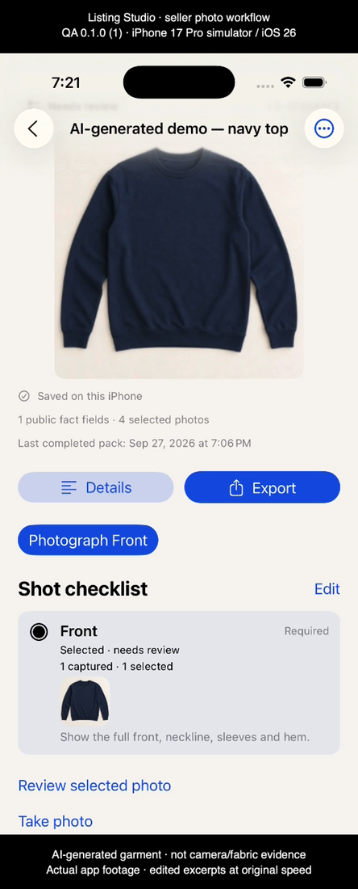
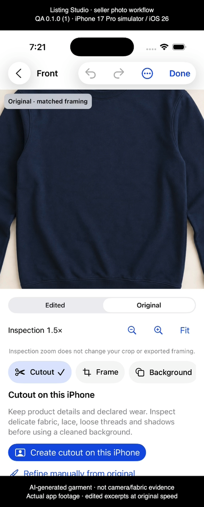
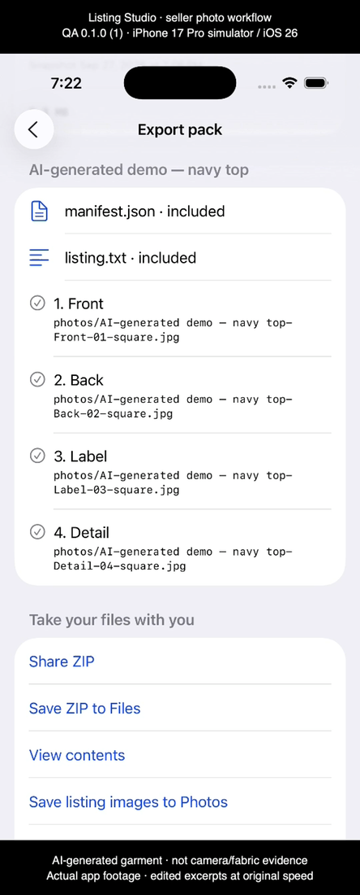

Inspect the details.
Prepare the pack.
A 52-second demonstration of organizing an item, inspecting its original photo and reviewing a completed listing pack in Listing Studio.
AI-generated sample garment · Simulator demonstration
The fictional navy top is used to demonstrate the workflow. It is not evidence of camera quality or real fabric performance. The footage comes from an isolated QA simulator workspace and contains edited excerpts at original speed.
What the video shows
The item and shot checklist, original-photo inspection at 1.5×, and an existing completed four-image export in history with its listed contents. The listing ZIP was generated through the app’s import and export services and independently inspected. The video does not show a new export starting.
Editorial stills






Version 1.1 update
The planned iPhone update improves zoom and inspection-position reliability, reopening the same item, and repair-tool layouts at accessibility text sizes. Focused simulator checks verified manual repair, crop persistence after reopening, and the largest-text repair workflow.
The demonstration does not verify automatic cutout quality, physical camera performance, spoken accessibility or subscription purchases. The video uses QA app version 0.1.0 (1), recorded on an iPhone 17 Pro simulator running iOS 26.0; the uploaded production build is separately versioned 1.1 (5).